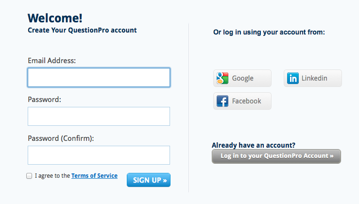

User Guide
Anonymous users cannot take surveys. In order to take one or create one, you need to sign up. Author users and respondent users must first authenticate in order to perform any other action.
How to:
- Sign up: Press the Sign up button from the home page. A new page opens: you can either log in using a different account, like one from google or facebook, or you can complete a form, writing down your email and password. The image below ilustrates a simple example:

- Sign in: Fill in the email address and password fields and press the Log in button. If the combination is correct, you will be logged in, otherwise an explanatory message is displayed.
-
Sign out: Press Sign out button in the top right corner of the page.
-
Create a survey: First, authenticate, then go to Surveys drop down menu -> Create a suvey. A new page opens. Specify the name of the survey and start adding questions by pressing the button Add a question. Select the type of the question, specify the text of the question, and answers, if needed. Save the question. You can delete the question, by pressing Delete this question button, displayed on the right to each question. When you are done, the survey is automatically saved and you will be displayed a link for the survey and possibilities to Edit or Delete the survey.
-
List all surveys: Navigate to Surveys->List all surveys. If you are the author, the site displays all created surveys; if you are a respondent, the site displays all completed surveys.
-
Select a survey: Go to Surveys->Select a survey. Type the name of the survey and if found, the corresponding survey is displayed. If you are the author of the survey, Edit, Display results and Delete options are displayed.
-
Edit a survey: Select a survey, then press the Edit button and you will be displayed a similar interface with that of creating a new survey.
-
Delete a survey: Select a survey, then press the Delete survey button. A confirmation is asked and in case you confirm, the survey is deleted.
-
Fill in a survey: Either having a link of the survey or selecting it using the name, you can access a survey. You then can answer all the questions and press the Save button at the end.
-
Create a question: Go to Questions drop down menu->Create a question. Specify the type, text and possible answers of the question if needed. You can then assign a question to a survey or a group of questions.
-
Modify a question: Go to Questions->Modify a question. Find the question by typing its text, then edit it.
-
Delete a question: Go to Questions->Delete a question. Select the question, press Delete. Confirm.